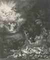

Dataset: huggan/wikiart | Model: nvidia/nemotron-3-nano-omni-30b-a3b-reasoning:free
has_human: false
has_animal: true
has_flower: false
Landscape with birds in sky, no humans visible.

has_human: true
has_animal: false
has_flower: false
A human figure is visible in the lower part of the image.
has_human: true
has_animal: false
has_flower: false
The image depicts a human figure in a painted portrait.